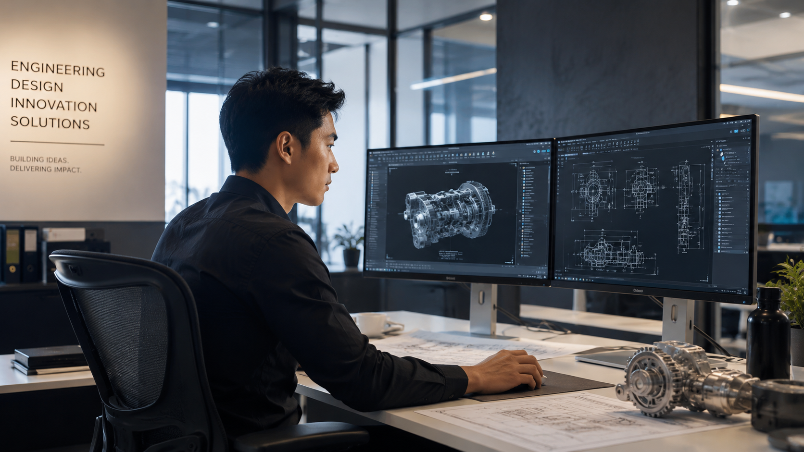
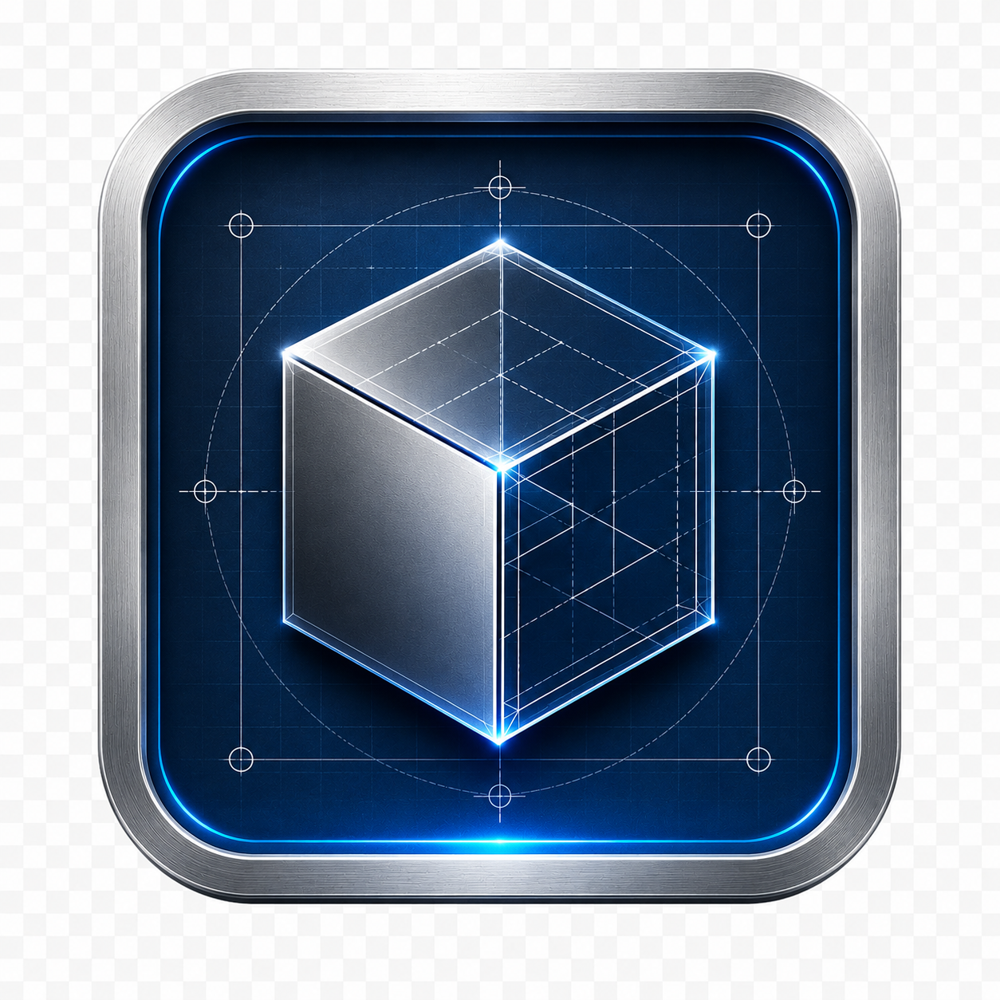
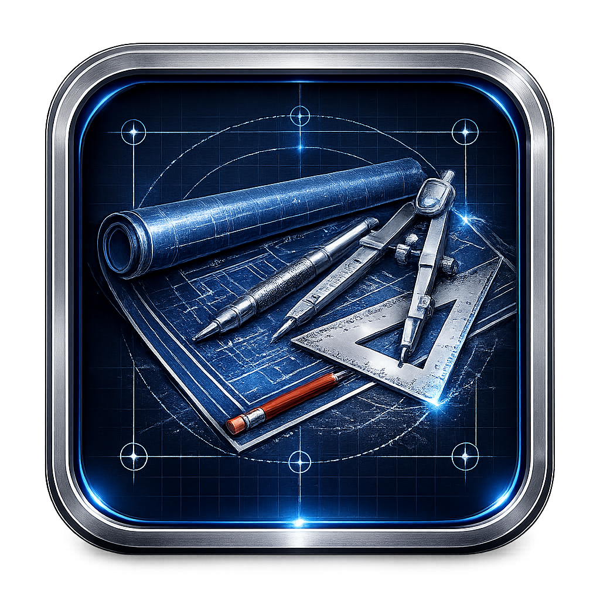

Mechanical Designer specializing in Industrial Engineering Support, Reverse Engineering, CAD Documentation, and Practical Design Solutions for maintenance, fabrication, and production environments.

Engineering, design, coordination, and digital solutions.
Mechanical and fabrication-focused design support.
Technical drawings, 3D modeling, 3D CAD, rendering, and PDF drawing samples.
Design review, drawing checking, and technical communication.
Websites, dashboards, and workflow tools.
A simple workflow from sketch or idea to engineering deliverables.
Send your sketch, image, PDF, drawing, or file link through the request form.
I check the scope, available references, expected output, and required design details.
You receive initial feedback, clarification questions, and a quotation if the project is suitable.
CAD modeling, drafting, checking, and documentation work begins based on the agreed scope.
Final drawings, PDFs, images, or model references are prepared and sent for your review.
Practical engineering support backed by CAD experience, clear communication, and modern digital presentation.
Design decisions are guided by practical mechanical understanding, fabrication awareness, and engineering workflow experience.
Support for 3D modeling, technical drawings, PDF packages, rendering, and documentation for design communication.
Focused on clear, buildable, and review-ready outputs that help clients understand the concept and move forward.
Project requests are reviewed with attention to scope, references, file links, deadlines, and required deliverables.
Practical engineering support developed in fast-paced industrial environments, working directly with production, maintenance, workshop, and engineering teams.
My experience includes supporting industrial maintenance and production teams through reverse engineering, AutoCAD Mechanical drafting, fabrication drawing preparation, and practical mechanical design support.
In plant environments, equipment downtime can directly affect production. This required fast technical response, accurate site measurements, clear workshop drawings, and practical solutions that could support maintenance repair and replacement activities.
Experienced in supporting production, maintenance, workshop, and engineering teams through reverse engineering, AutoCAD Mechanical drafting, fabrication drawing preparation, equipment modification, and practical problem solving within demanding industrial environments.
Measuring existing machine parts and creating usable drawings when original documentation was unavailable.
Preparing practical 2D drawings, fabrication details, replacement parts, and workshop-ready documentation.
Supporting urgent replacement parts and design modifications to help reduce equipment downtime.
Working with fabrication and maintenance teams to ensure drawings were clear, practical, and buildable.
Engineering software, drafting tools, CAD platforms, and digital skills used to support design projects.
3D modeling, assemblies, fabrication design, and technical drawings.
Mechanical design, parametric modeling, and engineering documentation.
Mechanical drafting, reverse engineering, fabrication drawings, maintenance support documentation, and workshop-ready drawing packages.
Cloud-based CAD collaboration, 3D modeling, and browser-based design review.
Manufacturing drawings, fabrication details, and design communication.
Mechanical components, assemblies, concepts, and presentation models.
Drawing packages, PDFs, design reviews, and project deliverables.
Portfolio websites, workflow tools, engineering presentation, and digital solutions.
Professional engineering and digital design tools used to deliver accurate, efficient, and production-ready solutions.

SolidWorks
AutoCAD MechanicalFlexible engineering and CAD support tailored to project requirements.
Technical drawings, detailing and documentation support.
Complete CAD development and design support.
Technical review and engineering coordination.
Feedback based on engineering design support, CAD documentation, drafting quality, and project coordination.
"Daren shows good attention to detail in CAD work and prepares drawings that are clear for review and discussion."
"The drawing documentation is practical, organized, and useful for fabrication and workshop coordination."
"Daren communicates clearly, responds well to revisions, and supports project requirements with a practical approach."
Engineering Drawings
Industrial Projects
CAD Platforms
International Collaboration
Focused on practical engineering support, clear communication, and professional delivery.
Typical Initial Response
Project Information Handling
Engineering Deliverables
Worldwide Collaboration
A real engineering design project demonstrating practical problem solving, CAD development, and manufacturing-focused design.

Design and development of a roller support assembly for a kiln dryer system, focused on structural support, alignment, maintainability, and reliable operation.
Develop a robust roller support structure capable of carrying operational loads while maintaining alignment and serviceability within a kiln dryer system.
Designed a roller support assembly using CAD-based engineering development, including structural components, mounting arrangements, and manufacturing-ready documentation.
SolidWorks, Autodesk Inventor, AutoCAD Mechanical, Onshape Engineering Drawings, Design Reviews, Mechanical Design Evaluation, Project Documentation and Verification.
CAD Model, Manufacturing Drawings, Concept Design Package, Technical Documentation.
Produced a practical roller support design intended to improve equipment stability, load distribution, and long-term maintainability while supporting fabrication and installation activities.
Browse selected CAD models, renderings, manufacturing drawings, reverse engineering work, and technical case studies.
Available for mechanical design, CAD drafting, reverse engineering, engineering documentation, digital presentation, and remote project support for local and international clients.